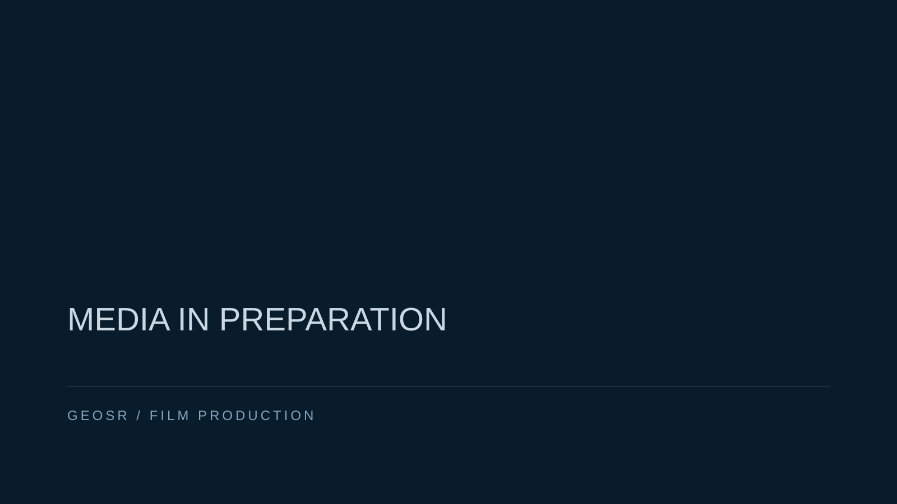
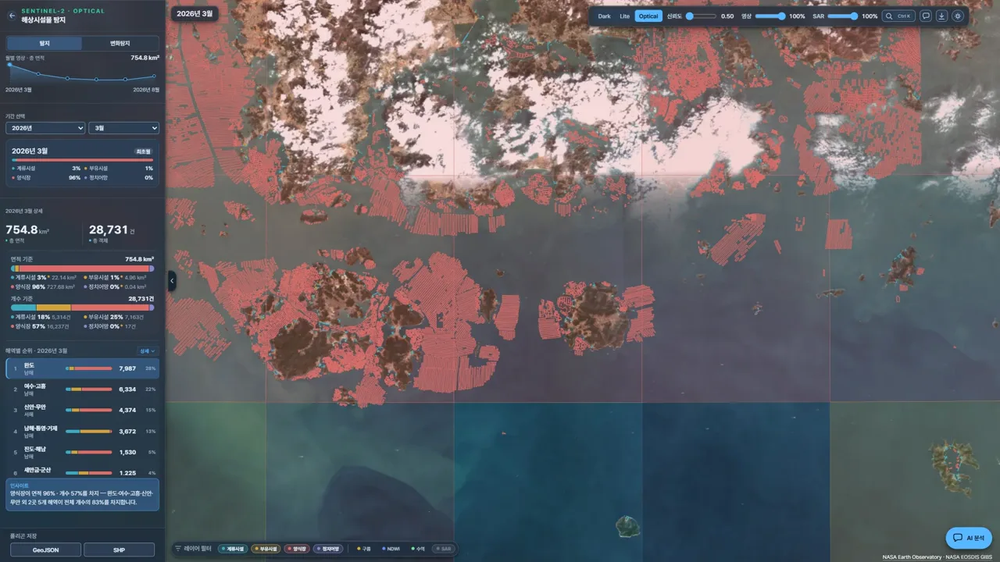
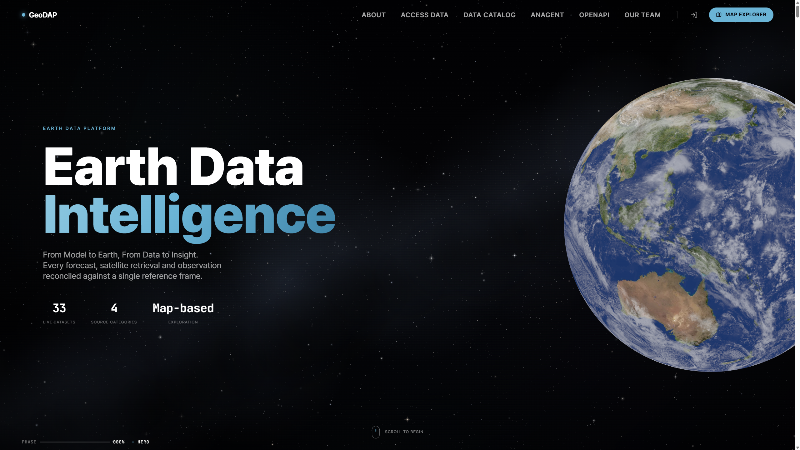
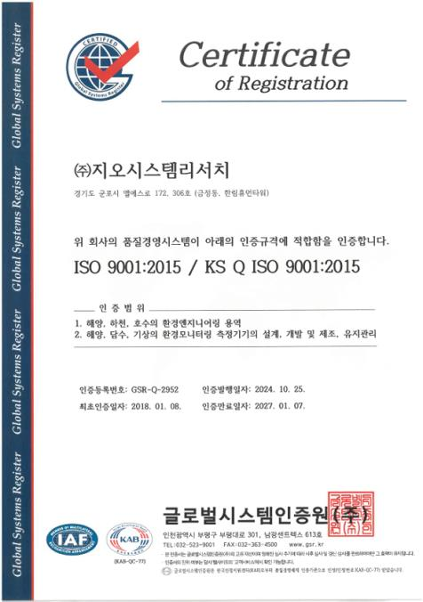
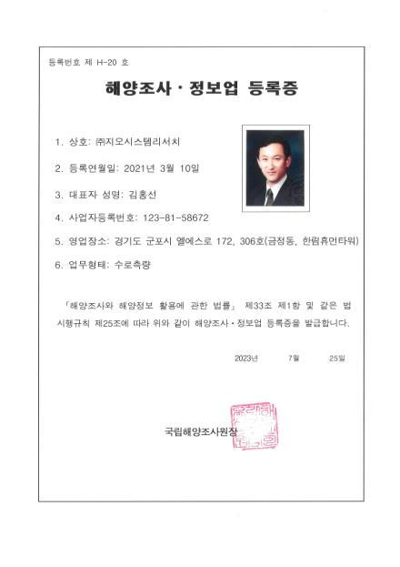
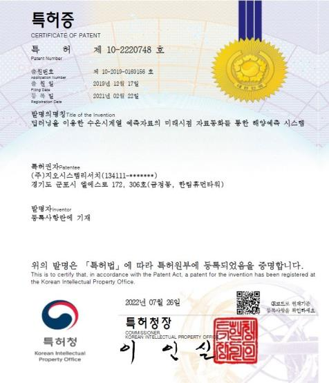

01OBSERVE
기준을 얻다
현장과 공간의 조건을 기록합니다.
- 하구·하천 과정 ID 15
- 무인선 이용 관측 ID 63
현장 자료에서 과학적 판단으로
해양·환경 현장에서 얻은 데이터를 분석하고 모델링해 AI와 플랫폼으로 연결합니다
관측의 시작점
연안·하천·항만과 육상 환경에서 얻는 자료가 분석과 설계의 기준이 됩니다.

측량과 해양 관측, 수질·퇴적물 시료, 생태 조사 등 목적에 맞는 방법을 연결합니다. 무인선은 여러 관측 수단 중 하나입니다.
SOURCE REFERENCE · PLACE / DATE OPEN자료에서 해석으로
관측 자료와 환경 조건을 검토하고, 목적에 맞는 분석·모델링을 거쳐 결과의 범위를 설명합니다.
현장과 공간 자료를 목적에 맞게 확보하고 기준을 기록합니다.
다섯 순간으로 잇는 연구 흐름
기술 기록 몇 가지를 연구 흐름에 연결한 편집 경로입니다. 항목의 원래 분류와 ID는 그대로 유지합니다.
현장과 공간의 조건을 기록합니다.
수질과 생태 자료를 해석합니다.
관측과 조건을 바탕으로 변화를 분석합니다.
검증된 모델과 적용 조건을 함께 설명합니다.
검증된 자료를 업무 목적과 연결합니다.
APPLIED INTELLIGENCE
목적별 환경·해양 플랫폼을 소개합니다. 각 항목은 별도 제품 맥락으로 다룹니다.

EARTH DATA PLATFORM
GeoDAP은 독립 서비스입니다. 아래 화면은 현재 서비스 화면이 아닐 수 있는 참고 캡처입니다.
Earth Data Intelligence
GeoDAP 공식 서비스
문서로 확인하는 기반
인증·면허·등록·지식재산권 자료를 서로 다른 분류로 보존합니다.

인증 · 원문 제목 유지

면허·등록 · 원문 제목 유지

지식재산권 · 세부 명칭은 원문 대조